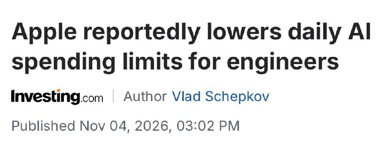

過去 26 小時共 2 則貼文，都是同一件事：Bloomberg 報導蘋果再次調降工程師每天能花的 AI 模型額度。主委的看法是企業的 AI 帳單扛不住，接下來會更往地端（本地／裝置端）模型走。
（標題日期更正：兩則都是 2026-11-05 台北時間。）
上月才針對員工 AI 支出尊節的蘋果，現在又再縮了（300～200～100）
不是只有台系業者在省工程師支出，美系也輪流傳出。有一說像在博通裡，只有特殊 clearance 的員工能隨便用，其他都有嚴格的上限
接下來看來就是要繼續往地端走了，帳單大家都扛不住
Last month, Apple lowered the daily spending cap for some engineers using AI models to $200 from $300, according to a Bloomberg report Wednesday. The company is said to now be planning further cuts for some engineering teams, potentially reducing their daily allowances to as little as $100.
Apple said this week that research and development expenses increased 32% in fiscal year 2026, driven by higher infrastructure and AI costs. Companywide operating expenses jumped 22% to a total of $75.5 billion, or 16% of total net sales.
#6531（無文字，圖片）：

Investing.com 文章標題截圖：「Apple reportedly lowers daily AI spending limits for engineers」，作者 Vlad Schepkov，發布於 2026 年 11 月 4 日 03:02 PM，就是 #6530 連結那篇。
講解
發生什麼事。消息來自 Bloomberg，引述不具名知情人士，蘋果官方沒有回應。據報導，蘋果 10 月把部分工程師每天的 AI 用量上限從 300 美元降到 200 美元，現在正規劃讓部分工程團隊再降到最低 100 美元。非工程部門本來就是 100 美元，有些團隊甚至考慮降到 25 美元；要例外需要高層核准。員工能用 Claude、ChatGPT、Gemini 等模型，部分團隊被要求改用較便宜或裝置端的模型。9to5Mac 把這波刪減和 CEO John Ternus 的整體節流連在一起。要注意「降到 100」目前只是規劃中；貼文寫的「300～200～100」看起來像已經發生，其實只有 300→200 落地了。
額度是什麼。工程師用 AI 寫程式（特別是會自己讀整個程式庫、反覆呼叫模型的 agent 工具）是按 token 計費。一個 agent 任務一次可能吃掉幾十萬甚至上百萬 token，所以每人每天幾百美元並不誇張。公司給「每日額度」就像給公務卡設上限：用量越大、模型越貴，帳單成長越快。
財報背景。蘋果 FY2026 研發費用年增 32%（9to5Mac 寫約 458 億美元），原因是基礎設施和 AI 成本；營業費用年增 22% 到 755 億美元，占營收 16%（後者來自貼文引的 Investing.com 段落，我讀的其他報導沒有提到）。營收創新高時還砍員工額度，表示管理層認為 AI 工具的投入報酬還沒算清楚。
需要保留的地方。報導也提到其實很少員工真的用滿 300 美元，能省多少錢並不清楚，有員工把這解讀成裁員的前兆。主委說博通「只有特殊 clearance 員工能隨便用」，他自己就說是「有一說」，我在查到的報導裡找不到出處，當傳聞看就好。其他公司方面，報導提到 Accenture 據傳把每人每月的 Claude 額度降到 29 美元；搜尋結果也有 Tesla 限制員工 AI 支出的報導標題，不過我沒有細讀。
對投資的意義。主委的推論是「往地端走」：雲端 API 的 token 費用太貴，企業會把部分推論移到自有伺服器或裝置端的小模型。這對本地推論硬體（AI PC、邊緣運算、企業自建 GPU）偏正面，對按 token 收費的模型商代表企業端的用量成長可能放慢。不過這只是推論：限額也可能只是砍掉浪費，總用量不一定會下降，雲端模型的單價也在持續下滑。
本次沒有業配或集數推播。